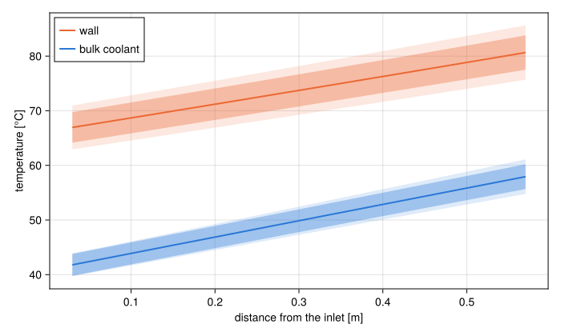
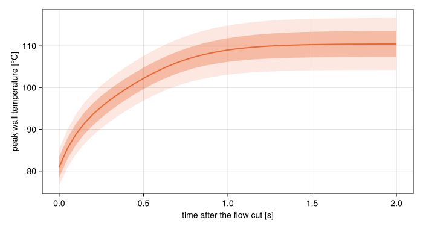

Propagate input uncertainties
UQ.uq carries the uncertainty of a model's inputs through to its outputs, to first order: how far the CHF ratio moves when the power is known to 5%, or the gap to a tenth of a millimetre. Uncertainty quantification explains what the numbers mean and when first order is enough.
The example is the plate of Compute safety margins, with its channel gap a design knob so that the gap can be one of the inputs:
using STREAMusing STREAM.Thresholdsusing STREAM.UQusing STREAM.Components: Pump, HeatExchanger, HeatDiffusion, Slab, ChannelAndContactsusing STREAM.Assemblies: inseries, symmetric_plateusing ModelingToolkit: @named, mtkcompilegap = @design_knob gap = 0.0024geometry = PipeGeometry_rectangular(0.6, 0.067, gap, 0.063)n = 10plate = Slab(; x=range(0.0, 0.00127; length=3), z=range(0.0, 0.6; length=n + 1), y=0.063, material=Solid(2700.0, 900.0, 180.0))@named fuel = HeatDiffusion(plate; power=3.0e4)@named ch = ChannelAndContacts(; n, geometry, g=-G_EARTH)@named cell = symmetric_plate(ch, fuel)@named pump = Pump(; ṁ0=0.4)@named hx = HeatExchanger(40.0)@named loop = assembly([inseries(pump, hx, cell.ch, pump), pump.outlet.p ~ 1.7e5], pump, hx, cell)sys = mtkcompile(loop)Wrap the model
A UQModel needs the inputs that carry an uncertainty, and the outputs to carry it to. The inputs are parameters of the compiled system, here the knob and three component parameters. The outputs come from a function of the solution, written as for threshold_analysis:
function margins(sol) state = ChannelState(sol, sys.cell.ch; pipe=geometry) return [minimum(chfr(q_CHF_sudo_kaminaga)(state)), # smallest CHF ratio minimum(bergles_rohsenow_t_onb(state) .- state.T_wall)] # K to the onset of boilingendinputs = [sys.cell.fuel.power, sys.pump.ṁ0, sys.hx.T_bc, gap]model = UQModel(sys, knob_defaults([gap]), inputs; output=margins)model.nominal2-element Vector{Float64}:
4.110012713192158
39.88822779909751Building the model solves the steady state once and takes its derivatives there. A pipe built from a knob can go to ChannelState as it is, and is evaluated at the knob's value.
Give each input its uncertainty
An Uncertainty has a systematic part, a bias of known size, and a statistical part, a standard deviation. Either can be relative to the nominal value or absolute:
uncertainties = ( sys.cell.fuel.power => Uncertainty(systematic_relative=0.05), # power calibration sys.pump.ṁ0 => Uncertainty(statistical_relative=0.03), # flow measurement sys.hx.T_bc => Uncertainty(statistical_absolute=1.0), # inlet temperature, K gap => Uncertainty(statistical_absolute=1.0e-4), # gap tolerance, m)result = uq(model, uncertainties...)(nominal = [4.110012713192158, 39.88822779909751], sys = [0.21056159979332664, 1.674779180773398], stat = [0.13593288782956023, 1.3533934829727938])An input left out has no uncertainty. The systematic parts add up linearly and the statistical ones in quadrature, so a margin with both is commonly checked as nominal - sys - k * stat for a coverage factor k:
result.nominal .- result.sys .- 2 .* result.stat2-element Vector{Float64}:
3.6275853377397107
35.50666165237852See which input matters
jacobian gives the derivatives behind the result, a row per output and a column per input:
J = jacobian(model)2×4 Matrix{Float64}:
-0.000140374 10.2982 -0.0564393 45.5553
-0.00111652 70.6148 -0.859359 -6124.76Multiplied by each input's uncertainty, a column shows what that input contributes:
J .* [0.05 * 3.0e4 0.03 * 0.4 1.0 1.0e-4]2×4 Matrix{Float64}:
-0.210562 0.123578 -0.0564393 0.00455553
-1.67478 0.847378 -0.859359 -0.612476More power takes margin away from both limits, and more flow gives it back:
@assert J[1, 1] < 0 && J[2, 1] < 0@assert J[1, 2] > 0 && J[2, 2] > 0Plot an uncertainty band
Any quantity the solution holds can be an output, such as the temperature in every cell. With the coolant and the wall temperatures as the outputs, the same uncertainties give a band along the channel:
using CairoMakiecoolant, wall = collect(sys.cell.ch.T), collect(sys.cell.ch.T_wall_left)profiles = UQModel(sys, knob_defaults([gap]), inputs; output=[coolant; wall])r = uq(profiles, uncertainties...)z = ((1:n) .- 0.5) .* 0.6 ./ nfig = Figure(size=(700, 420))ax = Axis(fig[1, 1]; xlabel="distance from the inlet [m]", ylabel="temperature [°C]")for (cells, color, label) in ((n+1:2n, "#eb6834", "wall"), (1:n, "#2a78d6", "bulk coolant")) y, s, σ = r.nominal[cells], r.sys[cells], r.stat[cells] band!(ax, z, y .- s .- 2σ, y .+ s .+ 2σ; color=(color, 0.15)) band!(ax, z, y .- 2σ, y .+ 2σ; color=(color, 0.35)) lines!(ax, z, y; color, linewidth=2, label)endaxislegend(ax; position=:lt)fig
The darker band is $±2σ$, the statistical part alone, and the lighter one adds the systematic part on either side. The coolant enters with only the inlet temperature's uncertainty, and gathers the power's and the flow's as it heats up along the channel:
@assert r.stat[n] > r.stat[1] && r.sys[n] > r.sys[1]Over a transient
Give the saved times as a fourth argument and the model is a transient. With start=:steady it settles first at the operating point and then runs with overrides applied, here the flow cut to half. The steady state it starts from carries the derivatives too, so an input counts both through where the run starts and through what follows:
times = 0.0:0.05:2.0peak_wall(sol) = [maximum(sol[sys.cell.ch.T_wall_left[i], k] for i in 1:n) for k in eachindex(sol.t)]cut = UQModel(sys, knob_defaults([gap]), [sys.cell.fuel.power, sys.hx.T_bc, gap], times; output=peak_wall, start=:steady, overrides=[sys.pump.ṁ0 => 0.2])r = uq(cut, uncertainties[1], uncertainties[3], uncertainties[4])fig = Figure(size=(700, 380))ax = Axis(fig[1, 1]; xlabel="time after the flow cut [s]", ylabel="peak wall temperature [°C]")band!(ax, times, r.nominal .- r.sys .- 2r.stat, r.nominal .+ r.sys .+ 2r.stat; color=("#eb6834", 0.15))band!(ax, times, r.nominal .- 2r.stat, r.nominal .+ 2r.stat; color=("#eb6834", 0.35))lines!(ax, times, r.nominal; color="#eb6834", linewidth=2)fig
The flow is an override here, so it carries no uncertainty of its own. A model with a StateMachine, such as a pump trip or a scram, is not supported yet: the trip time lives outside the problem, where the derivatives cannot follow it.
@assert r.nominal[end] > r.nominal[1]Check first order by sampling
monte_carlo solves the full model at inputs drawn from their uncertainties. Its standard deviations match the first-order ones where the response is close to linear over the spread, and part from them where it curves:
sampled = monte_carlo(model, uncertainties...; n=200)(first_order=result.stat, sampled=sampled.std)(first_order = [0.13593288782956023, 1.3533934829727938], sampled = [0.1295908405245232, 1.4288991036734804])Uncertainty quantification shows both on one profile.
Propagate through a function
For a correlation on its own, or any calculation that is not one steady solve, wrap a function of named inputs. It is called with dual numbers, so keep it free of Float64 conversions:
pipe = PipeGeometry_rectangular(0.6, 0.067, 0.0024, 0.063)ofi = UQModel(x -> q_OFI_whittle_forgan(x.ṁ, x.T_sat, x.T_in, pipe), (ṁ=0.4, T_sat=115.0, T_in=40.0))uq(ofi, :ṁ => Uncertainty(statistical_relative=0.03), :T_in => Uncertainty(statistical_absolute=1.0))(nominal = [112187.0039037317], sys = [0.0], stat = [3582.328291643069])Get the outputs as Measurements
With Measurements.jl loaded, measurements returns the outputs as value ± σ. They keep track of the inputs they came from, so arithmetic on them is right even where outputs are correlated:
using Measurementsy = measurements(model, sys.pump.ṁ0 => Uncertainty(statistical_relative=0.03), gap => Uncertainty(statistical_absolute=1.0e-4))2-element Vector{Measurements.Measurement{Float64}}:
4.11 ± 0.12
39.9 ± 1.0A Measurement holds a standard deviation only, so this takes statistical parts alone.